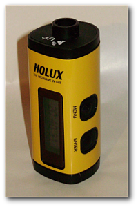

Holux m241
Dieser Artikel wurde für die folgenden Ubuntu-Versionen getestet:
Dieser Artikel ist mit keiner aktuell unterstützten Ubuntu-Version getestet! Bitte diesen Artikel testen und das getestet-Tag entsprechend anpassen.
Zum Verständnis dieses Artikels sind folgende Seiten hilfreich:
Der M-241  von Holux ist ein GPS-Logger, der sich mittels USB-Kabel oder Bluetooth auch als GPS-Maus nutzen lässt.
von Holux ist ein GPS-Logger, der sich mittels USB-Kabel oder Bluetooth auch als GPS-Maus nutzen lässt.
Bedienung¶
Das Gerät wird über zwei Tasten bedient, wobei die "Menü-Taste" die Menüoptionen durchwechselt und die "Enter-Taste" eine Option anwählt oder in ein Untermenü abtaucht. Die Menüoptionen sind wie folgt (In Klammern sind die verfügbaren Optionen aufgeführt):

Aufzeichnungs-Modus (Start/Stopp)
Zeitanzeige
Positionsanzeige (Speicherung der aktuellen Position)
Geschwindigkeits- und Höhenanzeige
Distanzmessung (Start/Stopp)
Einstellung
Distanzmessung (Punkt/Route)
Messeinheit (km/Meile)
Verhalten bei vollem Speicher (Stopp/Überschreiben)
Aufzeichnung nach Zeit, alle ... Sekunden (1/5/10/15/30/60/120)
Aufzeichnung nach Distanz, alle ... Meter (50/100/150/300/500/1000)
Sprache (Englisch/Deutsch/Französisch/Chinesisch [Lang- und Kurzzeichen])
Automatische Aufzeichnung (Ja/Nein)
Rücklicht, abschalten der Display-Beleuchtung in ... Sekunden (5/10/15/30/60)
Löschen des internen Speichers
Werkseinstellungen
Zurück zum Hauptmenü
Programme¶
GPSBabel¶
GPSBabel ist eine grafische Anwendung, die zur Konvertierung von GPS-Datenformaten in das jeweils benötigte Format eingesetzt wird. Es lassen sich damit eine Vielzahl von GPS-Chips auslesen und die Daten in verschiedenen Formaten speichern. Die Anwendung versteht sich bis auf das Auslesen von Wegpunkten auch mit dem MTK-Chipsatz des Holux m-241.
Tracks auslesen¶
Das Auslesen der Tracks erfolgt mit dem folgenden Kommando im Terminal [1].
gpsbabel -t -i m241 -f /dev/ttyUSB0 -o gpx -F track.gpx
Löschen des Speichers¶
Der Speicher kann wiederum mit GPSBabel gelöscht werden. Der erase-Parameter kann auch gleich mit dem Befehl zum Auslesen verknüpft werden, dann geschieht beides in einem Arbeitsschritt.
gpsbabel -i m241,erase -f /dev/ttyUSB0

MTKBabel¶
MTKBabel ist eine in Perl geschriebene Anwendung für die Kommandozeile, um GPS-Daten auslesen zu können. MTKBabel kann aus den offiziellen Paketquellen installiert [2] werden:
mtkbabel (universe)
 mit apturl
mit apturl
Paketliste zum Kopieren:
sudo apt-get install mtkbabel
sudo aptitude install mtkbabel
Tracks auslesen¶
Im Terminal können die gespeicherten Wege (Tracks) mit dem folgenden Kommando ausgelesen werden:
mtkbabel -s 38400 -f NAME-DES-TRACKS -t
Es befinden sich danach zwei neue Dateien im Verzeichnis, aus dem mtkbabel aufgerufen wurde:
NAME-DES-TRACKS_trk.gpx - alle gespeicherten Tracks
NAME-DES-TRACKS.bin - Speicherinhalt in binärem Format
Wegpunkte auslesen¶
Wurden Wegpunkte gespeichert, so können diese mit
mtkbabel -s 38400 -f DATEI-MIT-WEGPUNKTEN -w
in eine Datei ausgelesen werden.
Löschen des Speichers¶
Den Speicher des m-241 löscht man mit
mtkbabel -s 38400 -E
Der Parameter -E kann auch direkt an den Befehl zum Auslesen der Tracks oder Wegpunkte angefügt werden. Dann erfolgen das Auslesen und das anschließende Löschen des Speichers in einem Schritt.
BT747¶
BT747  ist eine grafische Software für Geräte mit dem GPS-Chipsatz MTK oder MTK II. Voraussetzung für BT747 ist eine Java Laufzeitumgebung (JRE). Mit OpenJDK 6 gibt es einige Probleme, mit OpenJDK 7 sollte es funktionieren. Alternativ kann die JRE von Oracle Java (früher Sun Java) verwendet werden.
ist eine grafische Software für Geräte mit dem GPS-Chipsatz MTK oder MTK II. Voraussetzung für BT747 ist eine Java Laufzeitumgebung (JRE). Mit OpenJDK 6 gibt es einige Probleme, mit OpenJDK 7 sollte es funktionieren. Alternativ kann die JRE von Oracle Java (früher Sun Java) verwendet werden.
Installation¶
Die Programminstallation kann auf zwei verschiedenen Wegen erfolgen: entweder direkt als über Java Webstart via BT747_J2SE.jnlp  oder als Archivdatei zum herunterladen (BT747_version_full.zip). Nach dem Entpacken [3] des Archivs erfolgt der Programmstart über die Datei run_j2se.sh.
oder als Archivdatei zum herunterladen (BT747_version_full.zip). Nach dem Entpacken [3] des Archivs erfolgt der Programmstart über die Datei run_j2se.sh.
Hinweis!
Fremdsoftware kann das System gefährden.
Nutzung¶
Um die Daten auszulesen, muss zunächst unter "Einstellungen -> Geräteprotokoll -> Holux" ausgewählt werden. Anschließend wählt man ganz unten im Programmfenster /dev/ttyUSB001 als Schnittstelle. Bei mehreren USB-Geräten kann der Pfad anders lauten. Wenn das Gerät nicht in der Liste steht, hilft "Datei -> Finde serielle Schnittstellen" und eine Übertragungsrate von 38400 Baud. Ein Klick auf "Verbinden" stellt die Verbindung zum Gerät her.
Mit einem Klick auf "Herunterladen" im Reiter (Tab) "Log-Aktionen" wird der Gerätespeicher ausgelesen und in der angegebenen Rohdaten-Datei gespeichert. Um mit den Daten zu arbeiten, wählt man im Bereich "Konvertiere" zunächst als Gerät das Holux M-241 aus und klickt dann auf eine der Konvertierungsschaltflächen: z.B. "GUI" zur Weiterverwendung der Daten in BT747 oder "GPX" für den Export in eine .gpx-Datei. Der Dateipfad wird in "Ausgabeverzeichnis" und "Ausgabedatei" angegeben.
Weitere Details findet man in der deutschen Anleitung .
- Erstellt mit Inyoka
-
 2004 – 2017 ubuntuusers.de • Einige Rechte vorbehalten
2004 – 2017 ubuntuusers.de • Einige Rechte vorbehalten
Lizenz • Kontakt • Datenschutz • Impressum • Serverstatus -
Serverhousing gespendet von